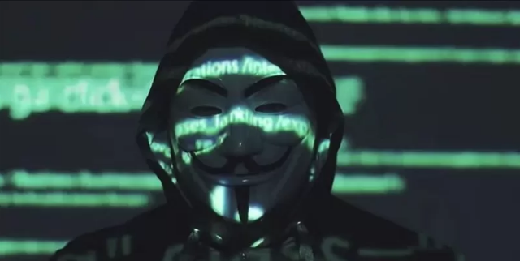

Cientos de miles de expertos en ciberseguridad,piratas informáticos y actores malignos de todo el mundo están participando activamente del conflicto.
La guerra ya se libraba en el ciberespacio ucraniano semanas antes de que el Gobierno de Vladimir Putin ordenara la invasión de Donetsk y Lugansk.
Entre el 13 y el 17 de enero, piratas informáticos rusos y bielorrusos
atacaron las múltiples entidades militares, gubernamentales y bancarias de Ucrania, con el objetivo de destruir sus bases de datos y bloquear sus sistemas operativos.
Este fue el inicio de uno de los mayores enfrentamientos que la guerra híbrida ha visto, que se lucha con códigos de programación malignos y que involucra tanto a actores militares como criminales de todo el mundo.
El colectivo de hackers activistas Anonymous ha estado bombardeando Rusia con ataques cesde que declaró la "guerra cibernética" al presidente Vladimir Putin en represalia por la invasión de Ucrania.
Casi dos meses después, se han registrado por lo menos unos 19 episodios de ciberataques contra Ucrania. Los más recientes han buscado destruir las bases de datos de servicios de telecomunicación y ministerios ucranianos, algo que ya había intentado el grupo de hackers ruso Sandworm en 2016, por lo que los funcionarios del Gobierno han movilizado equipos y copias de seguridad a áreas más seguras de su país para protegerlas. La ONG suiza Cyberpeace Institute advierte de que los mayores riesgos para la población civil están relacionados con los ataques a infraestructuras de servicios básicos como la energía y el agua.
Rusia invade Ucrania: cómo los ciberataques se convirtieron en otra poderosa arma en el conflicto entre ambos países